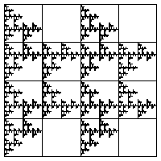
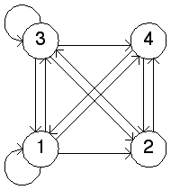
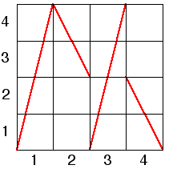

| 14. In the driven IFS picture |
|  |
| we see the empty addresses are 12, 22, 34, and 44. This gives the
forbidden transitions |
| The transition graph is shown on the left. On the right we
see the graph of a function that could generate this driven IFS
image. For each x-axis label i, the graph crosses completely
each y-axis label j if |
|   |
Return to Homework 8 Practice.